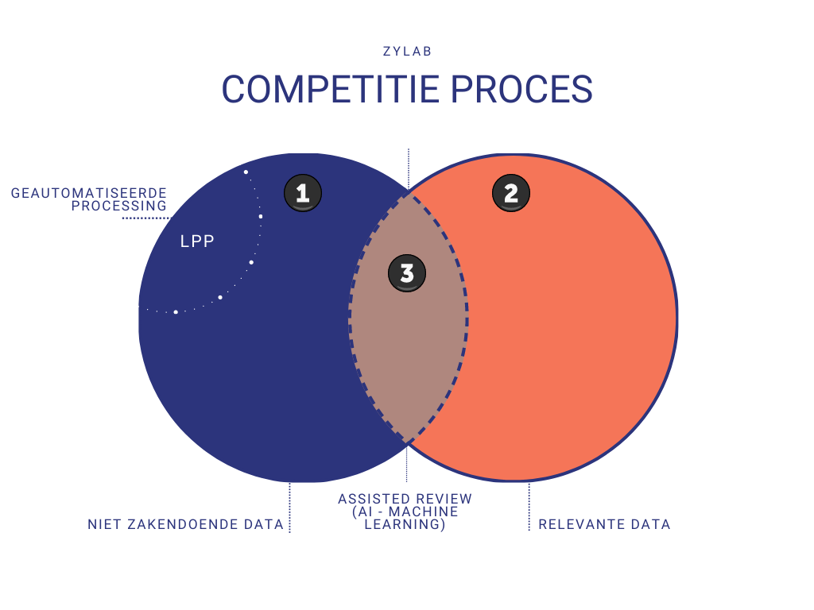

Onderzoeksstrategie
Traditioneel werden bij mededingingsonderzoeken specialistische dienstverleners ingeschakeld om informatie te verzamelen, doorzoekbaar te maken en te analyseren. ZyLAB heeft dit proces volledig geautomatiseerd middels de automatische ZyLAB Processing technologie in het ZyLAB ONE platform.
Door de enorme hoeveelheden data bij een mededingingszaak, is het niet meer mogelijk om alle data van het begin tot het eind te lezen Er zal een meer data gedreven onderzoeksstrategie gebruikt moeten worden. Daarbij worden de volgende stappen genomen:
- Alle data wordt volledig doorzoekbaar gemaakt, ook wel Deep Processing genoemd in het ZyLAB ONE platform.
- Legal Professional Privilege (LPP) informatie wordt geïdentificeerd en gemarkeerd zodat het apart gehouden kan worden bij het onderzoek en niet gedeeld wordt met derden.
- Data waarvan het vrijwel zeker is dat het niet zakendoende is, (hierna Niet Zakendoende oftewel: “NZ”) zoals nieuwsbrieven, spam, persoonlijke e-mail, etc., worden ook geïdentificeerd en gemarkeerd.
- Vervolgens wordt alle data waarvan het vrijwel zeker is dat het voor de zaak relevant is, geïdentificeerd en gemarkeerd met behulp van de geavanceerde zoektechnieken in ZyLAB ONE.
- Daarna wordt machine learning ingezet om de rest van de data (die nog niet bekeken is) te analyseren: we hebben namelijk een hoeveelheid data over waarvan we niet weten of die relevant of niet relevant is. Wat we nu kunnen doen is de computer leren door middel van machine learning wat niet relevant is en wat wel relevant is. Hierna kan de computer automatisch de overige data automatisch classificeren in “Potentieel Relevant” of “Potentieel Niet Relevant”. Vanzelfsprekend moet hierbij rekening gehouden worden met juridische verdedigbaarheid en kwaliteitscontrole. Maar daar gaan we later verder op in.
Door middel van deze aanpak kunnen we alle data analyseren zonder het allemaal te hoeven lezen. Dit is een effectieve aanpak die niet alleen toegestaan wordt door rechtbanken over de hele wereld, maar ook door regelgevende instanties wordt de bovenstaande aanpak aanbevolen of verplicht gesteld.
Een en ander wordt ook in onderstaande figuur grafisch duidelijk gemaakt.
